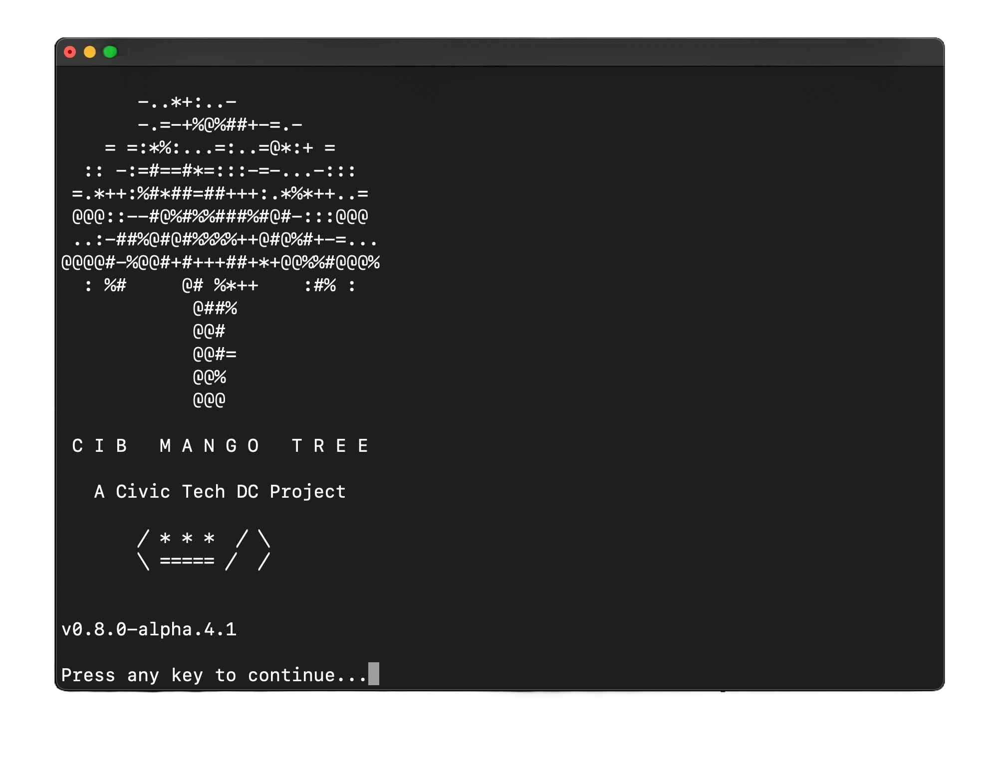
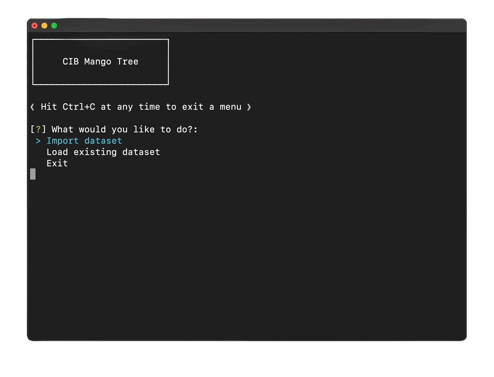

Welcome to the CIB Mango Tree, a collaborative and open-source project to develop software that tests for coordinated inauthentic behavior (CIB) in datasets of online activity.  A project of Civic Tech DC, our mission is to share methods to uncover how disruptive actors seek to hack our legitimate online discourse regarding health, politics, and society. The CIB Mango Tree presents the most simple tests for CIB first – the low-hanging fruit. These tests are easy to run and interpret. They will reveal signs of unsophisticated CIB. As you move up the Mango Tree, tests become harder and will scavenge for higher-hanging fruit.
What is Coordinated Inauthentic Behavior?
Coordinated Inauthentic Behavior (CIB) is the organized use of fake or misleading accounts, content, or activity to manipulate public opinion, disrupt online discourse, or spread disinformation. Often used by state or non-state actors, CIB undermines the integrity of online platforms by distorting legitimate discussions around critical issues like health, politics, and societal events.
How It Works:
The CIB Mango Tree provides an interactive command line interface that houses various tests for signs of coordinated inauthentic behavior. Our programs do not scrape data but analyze existing datasets of social media behavior that you provide. The tool looks for signs of CIB by analyzing parameters such as post content, username, and timestamp, based on behaviors common to CIB campaigns. By running our tests, you can uncover abnormal online activity and understand the strategies used by disruptive actors.
Who's It For?
This tool is ideal for researchers, journalists, civil society organizations, and digital analysts who must detect CIB in their datasets. Whether focused on monitoring disinformation campaigns or protecting online discourse, our tool provides structured, adaptable testing methods to help you achieve your goals!
Inspiration:
This project is inspired by Taiwan's vibrant civil society (and one of its best fruits). The project aims to emulate the Taiwanese people's drive for open online expression, free of manipulation. Online discourse can sometimes be colorful, but it should also be natural and healthy, like a mango.
- Coordinated Inauthentic Behavior: Organized, malicious efforts to manipulate public opinion online through fake accounts or disinformation.
- Civic Tech: The use of technology to improve the relationship between citizens and their government.
- Scraping:The automated process of extracting data from websites. This can be done using custom-built programs or tools, often called "scrapers."
- APIs (Application Programming Interfaces): Tools that allow different software programs to communicate with each other, often used to access data from social media platforms.
- Python: A programming language that will help with sorting through your databases
- Github: A community platform that allows developers to manage and share their code with others
- Command Line Interface: A text-based interface on your computer that will allow you to look at your databases
- Meta: Coordinated Inauthentic Behavior Explained
- Stanford University: How Coordinated Inauthentic Behavior continues on Social Platforms
- Atlantic Council: The Digital Forensic Research Lab
- The Global Disinformation Index: Research and Reports